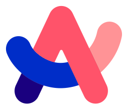
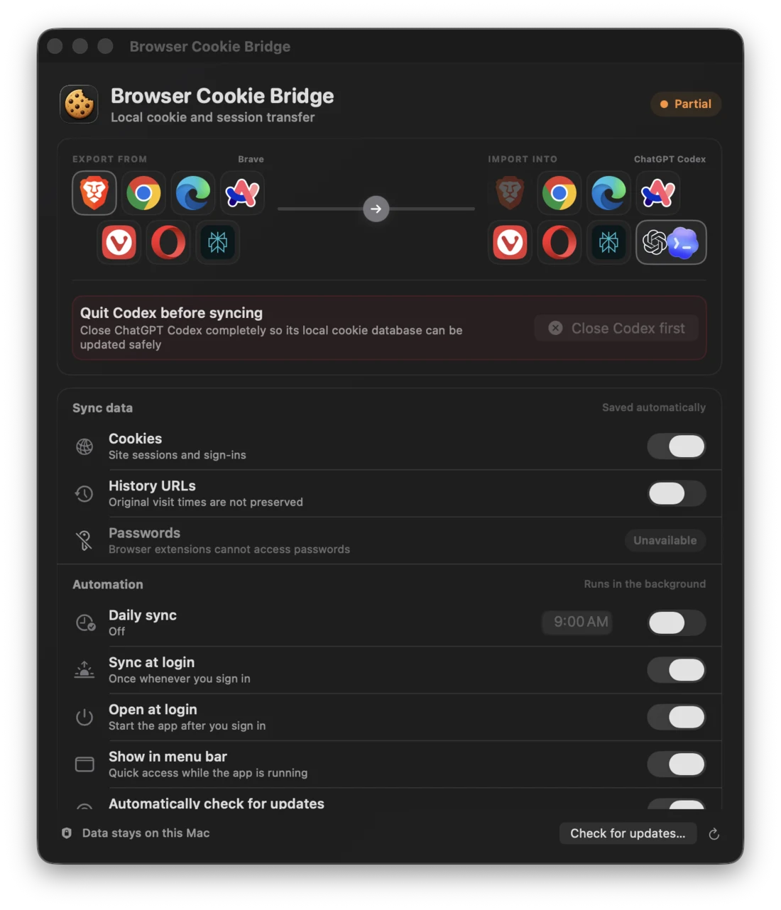
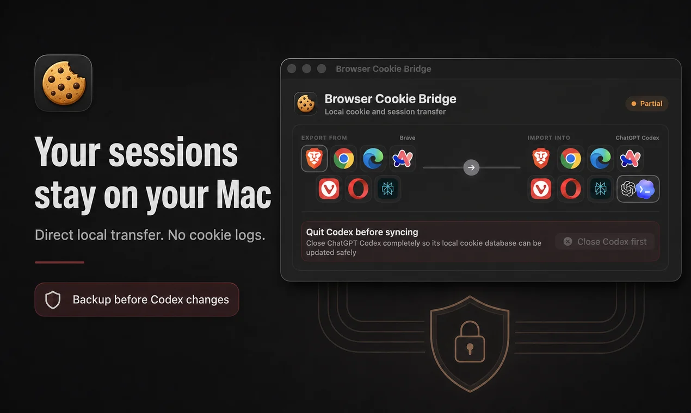
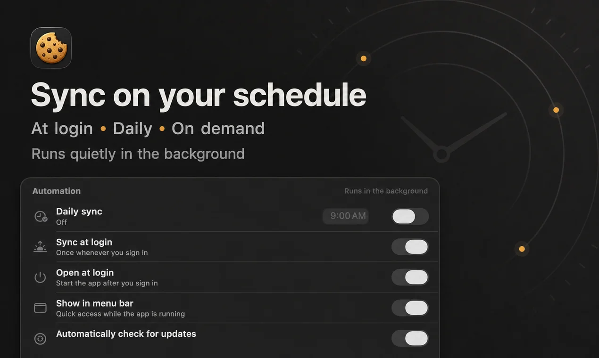

Native macOS utility · local beta
Your browser sessions.
Across the browsers you use.
Move cookies and signed-in sessions between Brave, Chrome, Edge, Arc, Vivaldi, Opera, and Comet—or import them into ChatGPT Codex. No cloud relay. No cookie logs.
Local transfer
Ready
Export from
 Pick a browser
Pick a browser
Import into
ChatGPT Codex
Data stays on this Mac
Cookies on by default
01Local by design
02Explicit endpoints
03Backed up before write
04No password access
What it solves
One login.
Seven browsers.
Zero cloud relay.
Signing into the same sites across browser profiles is repetitive. Browser Cookie Bridge gives your local profiles a small, native control panel: choose the source, destination, and data—then move it directly.
Chrome
ArcSource → destination
A route you can see before it runs.
Both endpoints stay visible. The app identifies what connected, what failed, and which browser needs attention—without vague background errors.
- Cookies enabled by default
- History is always optional
- Passwords remain unavailable

Local
Your sessions stay on your Mac.
The broker binds to loopback, holds browser-to-browser payloads in memory, and never writes cookie values to logs.

Quietly capable
Sync when it fits your routine.
Run on demand, once at login, or at a fixed local time. Closing the window keeps the menu-bar helper available.

How it works
Three deliberate steps.
No hidden sync.
1
Choose both endpoints
Select a source browser and a different browser—or ChatGPT Codex—as the destination.
2
Choose what moves
Cookies preserve supported attributes. History URLs are optional. Passwords and Keychain data stay untouched.
3
Review the result
Success, partial transfer, blocked state, and endpoint errors are surfaced in the app and menu bar.
Codex destination
Close Codex. Transfer. Reopen.
Codex must be completely closed so its local SQLite database can be backed up and replaced safely. The app blocks the write while Codex is running and never force-quits it.
Safety before convenience
Cookies are credentials.
The app treats them that way.
Codex transfers work on a separate copy, run SQLite integrity checks, and replace the destination only after validation. If replacement fails, the original backup is restored.
Read the security policy ↗Transfer ledgerPolicy
Cookie values in logsNever
Password-store accessNever
Remote relayNone
Codex pre-change backupAlways
Unknown database schemaFail closed
Backups retained14 newest
Transfer support
Exactly what moves—and what never does.
DataSupportWhat to expect
Cookies & sessions Default
Supported values, domain, path, expiry, security, SameSite, and partition attributes.
History URLs Optional
URLs transfer; original visit times and page titles cannot be preserved.
Passwords Never
Chromium extensions cannot read the browser password store.
Bookmarks & autofill Never
Bookmarks, payment data, autofill, and iCloud Keychain remain untouched.
Install locally
Build it on your Mac.
Know exactly what runs.
Browser Cookie Bridge is open source and currently in local beta. The native SwiftUI app builds into your user Applications folder—no administrator password required.
macOS 13+Node.js 22.5+Xcode CLI tools
$ git clone https://github.com/apoorvdarshan/browser-cookie-bridge.git
$ cd browser-cookie-bridge
$ npm test
$ npm run build:app$ npx browser-cookie-bridge install-appThe npm package will become available with the first tagged public release.
→ Installs to ~/Applications/Browser Cookie Bridge.app
Straight answers
Before you move a session.
Still unsure? Open a GitHub issue without including cookie values, tokens, or private browser data.
Report a bug ↗Why must Codex be closed?
Codex can overwrite or ignore offline database changes while its Chromium process is running. The app blocks direct import until Codex is completely closed so it can back up, validate, and replace the database safely.
Do other browsers need to be closed?
No for extension-based browser-to-browser transfers. Those browsers should be open so their installed extensions can receive the request. Codex is the exception because it uses a direct local database merge.
Does this move passwords?
No. Browser extensions cannot access Chromium's password store. Browser Cookie Bridge does not access passwords, Keychain items, payment data, bookmarks, or autofill.
Does it overwrite all destination cookies?
The importer merges selected records using their cookie identity fields. Existing unrelated destination cookies remain in place. Codex is backed up before any replacement.
Will every website stay signed in?
Not always. Some sites bind sessions to a device, browser, IP address, or other risk signals and may ask you to sign in again.
Is the npm package live?
Not yet. The release workflow is ready, but the first public package has not been published. Build from source for now.
Local. Explicit. Open source.